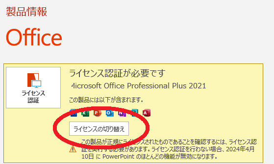

Office 2021のインストールガイド
このガイドでは、Office 2021 Professional Plusのインストール方法を説明します。
はじめに
取引メッセージから送られてきた「〇〇〇〇〇-〇〇〇〇〇-〇〇〇〇〇-〇〇〇〇〇-〇〇〇〇〇」の形式の英数字のコードを"プロダクトキー"といいます。
Office2021にプロダクトキー入力後に表示される7桁×9個の数字のみのコードを"インストールID"と言います。
また、プロダクトキーを受け取り後、一定時間認証されなければとコードが再発行となりますのでお早めに認証してください。
Office2021の認証までの流れ
1.ダウンロードリンクを発行し、OfficeSetup.exeをダウンロード2.officeのインストール
3.officeのセットアップ
4.プロダクトキーの入力
5.インストールIDを発行
6.認証作業
以上のような流れとなっています。
プロダクトキーを再入力する場合
プロダクトキーの再入力ダウンロードリンクを発行し、OfficeSetup.exeをダウンロード
下記のリンクをクリックし、ダウンロードリンクを発行し、OfficeSetup.exeをダウンロードしてください。
サイトの指示に従い、ダウンロードを押し、以下の画像のような画面が出たら、「保存」を押します。
officeのインストール
ダウンロードしたファイル(OfficeSetup.exe)を開いてください。
以下のような画面が出た場合、「実行」を押してください
以下のようにデバイスに変更を加える許可を求められた場合、「はい」を押してください
するとインストールが開始されます。完了すると以下のような画面が表示されます。表示されたらウィンドウを消してください。
officeのセットアップ
次はインストールしたofficeを起動してください。Excel、powerpointどれでも構いません。
起動すると次のような画面が出てきますので画像の赤い丸のボタンを押してセットアップを進めてください
プロダクトキーの入力
画像のようなポップアップが表示されたら、プロダクトキーを入力してください
表示されない場合は、こちらをご参照ください。
入力後、「Office をライセンス認証」を押してください
ポップアップが表示されなかった場合
横のバーの「アカウント」を押してください
すると、右上に画像のような画面が表示されますので「ライセンス認証」を押してください
インストールIDを発行
プロダクトキーを入力後、認証画面が出たら「ソフトウェアのライセンス認証を電話で行う」を選択し「次へ」を押してくださいてください。
※「ソフトウェアのライセンス認証をインターネット経由で行う」でも認証可能な場合がありますので、一度お試しください。もし、エラーが発生した場合は「戻る」を押していただき、引き続き手順に則って認証してください。
画像のような画面に移ったら、インストールIDをメッセージにお送りください。※また、認証をお早めに済ませたい場合はインストールIDを送らず、引き続き認証作業を行うとすぐに認証されます。

認証後、「確認ID」をお送りいたします。その確認IDを先ほどの画面の3のA B C D E F G Hの部分に入力してください。
※認証にお時間いただく場合がござますので、閉じていただいて大丈夫です。確認IDを入力する場合は、こちらをご参照ください。
また、認証をお早めに済ませたい場合は引き続き認証作業を行うとすぐに認証されます。
認証作業
ご自身で電話にて認証いただくとすぐに認証することができます。また、フリーダイヤルですので通話料などは掛かりません。また、オペレーターも自動応答ですので安心して認証いただけます。
まず、インストールIDをご準備ください。
次に、0120-801-734へ電話します
録音に同意するかどうか聞かれましたら「２」を押してください。
「セキュリティの為フレーズを発音してください」と言われた場合数字を言ってください。
次に電話の要件について聞かれ場合「オフィス」と言ってください。
次に機種について聞かれた場合、「ウィンドウズ」と言ってください
それ以降の質問については「はい」でお答えいただき、自動音声に従い、インストールIDを全てご入力ください
入力後、PCの台数を聞かれたら「１」と言ってください。
また、確認IDを読み上げ？… で電話を切って頂いて大丈夫です。
ライセンス認証ウィザードで「インターネット認証」を選び次へ、
製品情報のところに「ライセンス認証された製品」と表示されていれば完了しています。
また、マイクロソフトに正規の製品として認識されていませんと言われた場合、プロダクトキーの期限が切れている可能性があります。その為、大変申し上げにくいのですが、インストールIDと共にその旨を取引メッセージにお送りください
プロダクトキーの再入力
プロダクトキーが一定時間認証されず失効した場合、プロダクトキーが再発行され、再度入力しなくてはならない場合があります。その場合、以下の手順を行ってください
横のバーの「アカウント」を押してください
すると、右上に画像のような画面が表示されますので「ライセンスの切り替え」を押してください 
そのあとは画面の指示に従い入力してください
よくある質問
Q: 再インストール可能ですか？
A: はい。パソコンのパーツ、構成が変更されていなければ再インストール可能です。
Q: 1つのライセンスで何台まで使えますか？
A: 1台までお使いいただけます。1台ごとにライセンスが必要となります。予めご了承ください。
Q: 質問は可能ですか？
A: ご不明な点などございましたらお気軽にお問い合わせください。
Q: エラーが発生し認証できませんでした。
A: 詳しくはお問い合わせください。